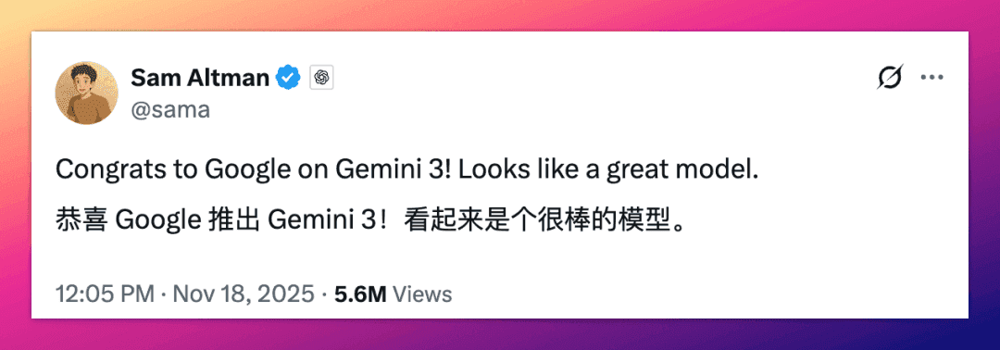
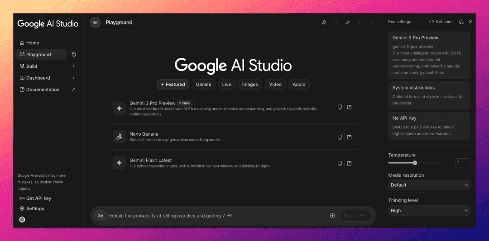
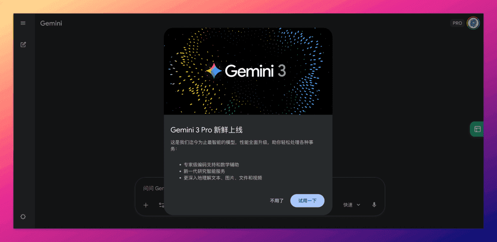
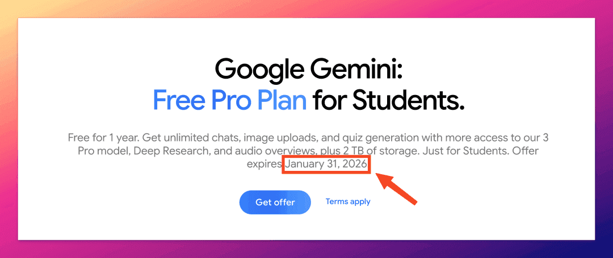
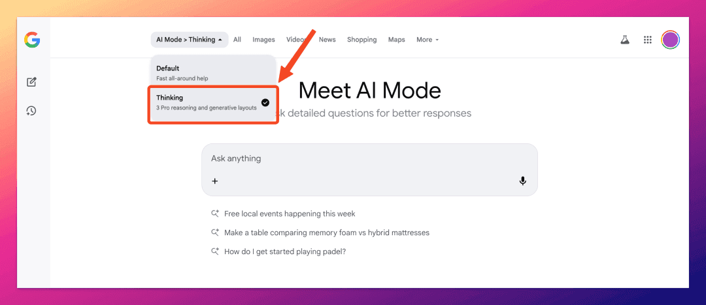
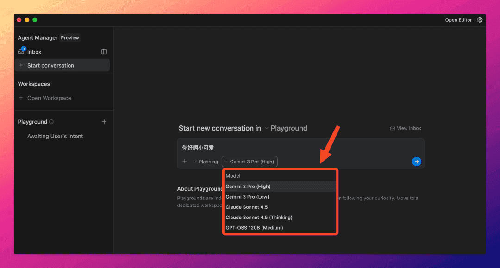
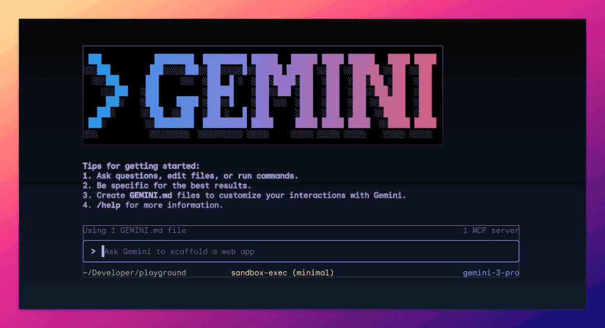
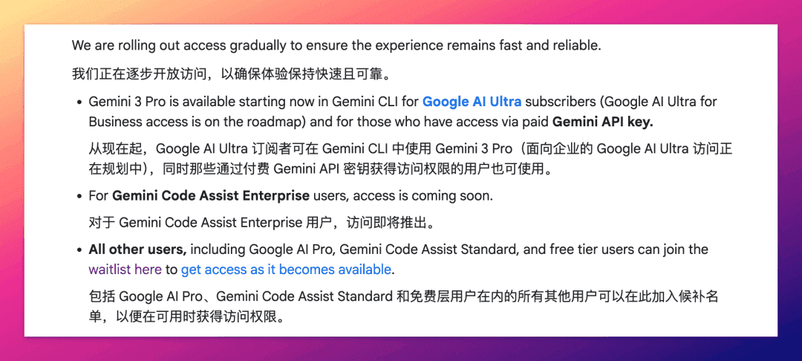
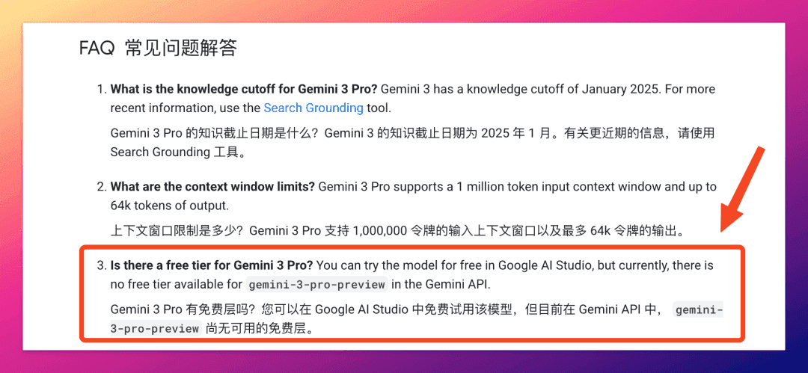
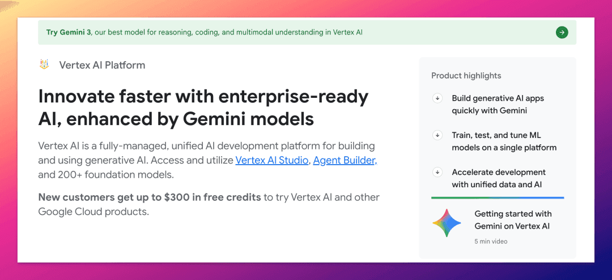

Gemini 3 官方使用姿势
连 OpenAI CEO Sam Altman 和马斯克都在点赞的大模型，是谁有这么大的排面？
没错，就是 Gemini 3 。

昨天谷歌正式发布 Gemini 3 ，我写了一篇拆解文章 ，然后评论区炸了。
很多小可爱都在问：怎么用？在哪用？免费吗？
我连夜整理了 7 种官方渠道（不得不说，谷歌的产品线，是真的乱）。
这篇教程让你 5 分钟搞定 Gemini 3 。
划重点：下面提到的所有渠道链接我放评论区置顶了。记得翻一下。 划重点：下面提到的所有渠道链接我放评论区置顶了。记得翻一下。 划重点：下面提到的所有渠道链接我放评论区置顶了。记得翻一下。
01｜Google AI Studio：最推荐的免费渠道
推荐指数：⭐⭐⭐⭐⭐

如果只能选一个，我闭眼推荐 AI Studio。
毫不夸张地说，我推荐这个平台已经一年多了。
为什么？
不只是免费且量大。
AI Studio 里的 Gemini 3 Pro 是满血版，上下文 100 万 tokens 拉满，毫无水分。
可玩性也很强。
你可以自行设置模型的 thinking level 、media_resolution 以及温度。
其他功能也很齐全。
不仅能聊天，还能画图、语音、甚至是视频聊天、生成视频，也都不在话下。
最近更新的 Build 模式更是 Vibe Coding 的一大利器。
支持参数调试、多模态输入、生成可分享的 AI 应用。
唯一需要注意的是，谷歌默认有权用你在 AI Studio 的对话数据训练模型。
记得不要发送敏感信息。
02｜Gemini 应用：网页端和手机 App
推荐指数：⭐⭐⭐⭐

这是普通用户最容易上手的渠道。
网页端已全面升级到 Gemini 3 。
移动端应该还在推送中。
在 Gemini 手机 App 里实测，有的账号已经开通了 Gemini 3 权限，有的账号（甚至是付费的）还停留在 2.5 Pro 。
免费可用，但有严格的额度限制，大约 5 次/天（远低于上面的 AI Studio）。
更推荐谷歌的学生优惠，白嫖一年 Gemini AI Pro 会员，谷歌官方昨天刚刚延长了这个优惠的申请时效。
详情看我半年前的爆料：Google One AI 会员15个月免费送，价值300美元，AI界最强羊毛来了！

03｜谷歌搜索 AI Mode：搜索的 AI 形态
推荐指数：⭐⭐⭐

这是谷歌首次在新模型发布当天就集成到搜索。
毕竟，这可是 Gemini 3 。
功能是好功能，但只能给它三颗星。
因为目前仅对部分 Gemini AI Pro 和 Ultra 订阅用户开放。
如何验证有没有灰度推送到你？
打开谷歌搜索首页，在输入框最右边选择 AI Mode 进入。
在 AI Mode 左上角，如果你能切换模型（就像我上面截图里那样），那么恭喜，你已经可以在 AI Mode 里爽用 Gemini 3 了。
04｜Google Antigravity：另一个 Cursor？
推荐指数：⭐⭐⭐⭐⭐（暂时）

这可能是昨天最被低估的发布。
它火爆到一度登都登不进去，进去了有的也是一直"转圈"。
后来谷歌紧急发布了更新版本。
那么，Antigravity 是什么？
你可以简单理解为：谷歌版 Cursor。
本质上它是一个 AI IDE，谷歌把它升级成了一个多智能体协作的开发环境。
支持 Gemini 3 ，还支持 Claude Sonnet 4.5 和 OpenAI 的那个开源模型。
重要的是，限时免费，但有速率限制。
05｜Gemini CLI：终端党的福音
推荐指数：⭐⭐⭐

给 Gemini CLI 三颗星，是因为它的使用场景很受限。
这是开发者的专属工具。
也就是，你需要有一定的命令行使用经验。
Gemini CLI 能干的事情很多：聊天、读取文件夹、写代码、执行 Shell 命令、调用谷歌搜索，还能连接 MCP 服务器。
安装也很简单，需要 Node.js 18 或以上版本：
npm install -g @google/gemini-cli然后执行 gemini 命令就行。
Gemini 3 的使用权限优先向 Ultra 订阅用户开启。
Pro 用户和免费用户在这里申请开通权限：
https://docs.google.com/forms/d/e/1FAIpQLScQBMmnXxIYDnZhPtTP3xr5IwHNzKW4nLomuQ1tGOO-UldMdQ/viewform

06｜AI Studio API：个人开发者
推荐指数：⭐⭐

谷歌官方已明确表示，这次没有向免费层级的用户开放 Gemini 3 API 使用权限。
所以，你需要绑卡，然后开通付费计划（Paid Plan）。
在 AI Studio 生成 API Key 是最直接的方式。
Gemini 3 API 价格是阶梯式的：
20 万 tokens 内：输入 2 美元/百万 tokens、输出 12 美元/百万 tokens
20 万 tokens 以上：输入 4 美元/百万 tokens、输出 18 美元/百万 tokens
比 GPT-5.1 稍贵，但比 Claude Sonnet 4.5 稍便宜。
07｜Vertex AI：企业级解决方案
推荐指数：⭐⭐

这是谷歌云的企业级 AI 平台。
适用于企业用户。
或者是注册了谷歌云（GCP），还在 300 美元免费额度内的个人用户。
Vertex AI 比 AI Studio 更强，可以云端部署也可以私有化，有完整的 MLOps 工具链，数据也是企业级隔离的。
就是操作稍微复杂一点，需要创建谷歌云账号，创建项目，启用 Vertex AI API。
新用户大善人谷歌会赠送时效 3 个月、300 美元的体验金，适合白嫖。
结语
24 小时，我把这 7 个渠道都试了一遍。
整体感受：谷歌这次是真的拼了。
虽然产品线略显凌乱，但整体生态布局相当完善。
它几乎在各个场景都提供了 Gemini 3 的入口。
从浏览器到终端，从个人到企业，总有一个适合你。